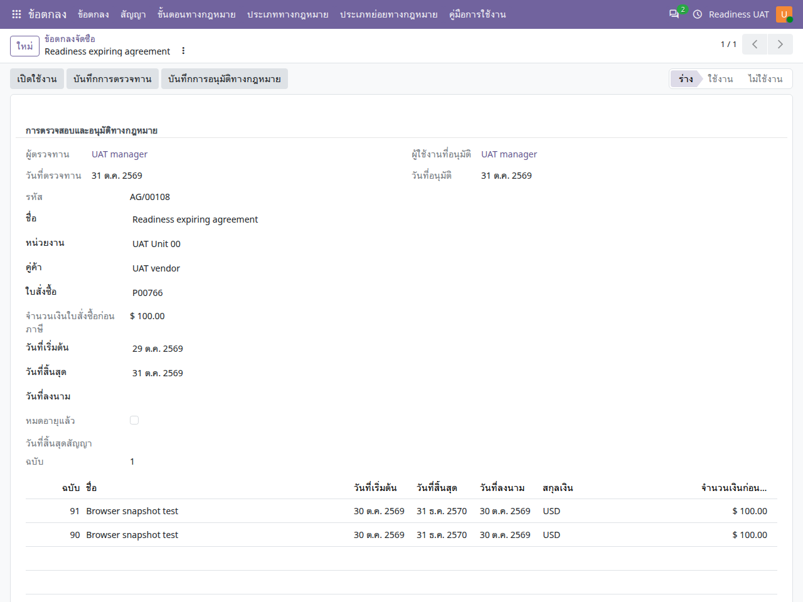

คู่มือการใช้งาน
ข้อตกลงและสัญญา
จัดการข้อตกลงตามใบสั่งซื้อ ลงนาม ตรวจทาน อนุมัติทางกฎหมาย และอ่านประวัติฉบับ
ไม่พบข้อความ ลองใช้คำอื่นหรือล้างคำค้นหา
เริ่มใช้งานและอ่านหน้าจอ
เปิดแอปจากเมนูหลัก แล้วเลือก คู่มือการใช้งาน คู่มือเปิดในแท็บใหม่เพื่อให้ดูพร้อมหน้าทำงานได้ เลือกแอปอื่นจากรายการด้านซ้าย หรือค้นหาคำในคู่มือนี้ และใช้ปุ่มพิมพ์ / บันทึก PDF เมื่อต้องการสำเนา
- ตรวจบริษัทที่มุมขวาบนและหน่วยงานในเอกสารก่อนสร้างหรืออนุมัติ เมนูและปุ่มขึ้นกับสิทธิ์ของบัญชี
- หลังแก้ข้อมูล ให้ใช้ปุ่มบันทึก / ไอคอนบันทึกตามที่แบบฟอร์มแสดง แล้วตรวจสถานะและเลขเอกสารก่อนออกจากหน้า
- ภาพประกอบเป็นข้อมูลจำลอง ชื่อรายการ ภาษา หรือเลขเอกสารอาจต่างจากบัญชีของคุณ ตัวเลขในภาพไม่ใช่ค่าที่ต้องกรอก
- ข้อความผิดเงื่อนไขให้จดเลขเอกสารและข้อความที่แสดง ส่งให้ผู้รับผิดชอบงานตรวจ อย่าส่งรหัสผ่านหรือข้อมูลเข้าสู่ระบบ
- ถ้าคู่มือเปิดแล้วภาพหรือภาษาเก่าค้าง ให้บันทึกงานในหน้าระบบก่อน แล้วรีเฟรชแท็บคู่มือ
ข้อตกลงกับสัญญาใช้ต่างกัน
| รายการ | ลักษณะการใช้งาน |
|---|---|
| ข้อตกลง | อ้างใบสั่งซื้อ เป็นเอกสารกฎหมายและประวัติฉบับ ไม่สร้างวงเงินผูกพันซ้ำจากใบสั่งซื้อ |
| สัญญา | รายการสัญญาที่มีบรรทัดและการผูกพันงบประมาณของตนเอง อาจเชื่อมใบเรียกเก็บเงินและตารางเกิดซ้ำ |
- ร่างข้อตกลง
- ตรวจทาน / ลงนาม
- เปิดใช้งาน
- ฉบับใหม่หรือยุติ
สร้างข้อตกลง
ข้อตกลง → ข้อตกลง → ใหม่
- เลือกบริษัท หน่วยงาน คู่ค้า และใบสั่งซื้อที่เป็นร่างหรือส่งขอราคาแล้วตามเงื่อนไข
- กำหนดวันเริ่มต้น วันสิ้นสุด และวันที่ลงนามเมื่อมีหลักฐานจริง ตรวจให้วันเริ่มไม่หลังวันสิ้นสุด
- ระบุขั้นตอน ประเภท ผู้รับมอบหมาย และผู้ติดต่อที่เกี่ยวข้อง
- ในเนื้อหาทางกฎหมาย กรอกคู่สัญญา เงื่อนไขพิเศษ และรายการส่วน/ข้อสัญญา
- แนบไฟล์ลงนามในแท็บการลงนามและการตรวจทานเมื่อมี แล้วบันทึก

บันทึกการตรวจทานและอนุมัติทางกฎหมาย
- ผู้จัดการสัญญาเปิดข้อตกลง ตรวจเนื้อหาและหลักฐานก่อนกด บันทึกการตรวจทาน
- หากผ่านการพิจารณาทางกฎหมาย ใช้ บันทึกการอนุมัติทางกฎหมาย ตามหน้าที่
- หลังบันทึก ระบบแสดงข้อความสำเร็จและชื่อผู้ดำเนินการกับวันที่ที่ด้านบนฟอร์ม
- ตรวจแถบสถานะต่อ ข้อมูลตรวจทานและอนุมัติทางกฎหมายไม่ได้เปลี่ยนข้อตกลงร่างเป็นใช้งานโดยอัตโนมัติ
เปิดใช้งานและจัดการฉบับ
- ข้อตกลงที่จะเปิดใช้งานต้องเป็นร่าง มีวันที่ลงนาม อยู่ในช่วงวันที่ใช้งาน และใบสั่งซื้อไม่ถูกยกเลิก
- กดเปิดใช้งานแล้วตรวจสถานะ หากต้องแก้เนื้อหาของฉบับที่ใช้แล้วให้ใช้ ฉบับใหม่
- ระบบเก็บภาพข้อมูลฉบับก่อนหน้าและเปิดฉบับร่างถัดไป ตรวจข้อมูลลงนามและตรวจทานใหม่ให้ครบ
- หากต้องยุติ ให้ผู้มีหน้าที่ใช้ปุ่มยุติข้อตกลงที่ใช้งานอยู่ และตรวจวันที่ยุติ
อ่านประวัติฉบับ
- คลิกแถวในตารางประวัติฉบับใต้ส่วนหัวข้อตกลง
- ตรวจชื่อ ฉบับ วันเริ่ม วันสิ้นสุด และข้อมูลลงนาม
- รายละเอียดทางกฎหมายแสดงข้อมูลที่เก็บ ณ ฉบับนั้น ไม่ใช่ข้อมูลล่าสุดของผู้ติดต่อหรือขั้นตอน
- หากไม่มีไฟล์หรือไม่มีเนื้อหา ระบบจะแจ้งไว้ ดาวน์โหลดไฟล์จากชื่อไฟล์เมื่อมีประวัติแนบ
- ข้อมูลประวัติเป็นแบบอ่านอย่างเดียว เนื้อหาในประวัติแสดงข้อความอ่านง่ายและอาจไม่คงรูปแบบตกแต่งทั้งหมด
สัญญาที่ผูกพันงบประมาณและรายการเกิดซ้ำ
ข้อตกลง → สัญญา
- กำหนดคู่ค้า บริษัท หน่วยงาน และบรรทัดสัญญาพร้อมมิติงบประมาณ
- ให้ผู้จัดการใช้ผูกพันงบประมาณเมื่อข้อมูลครบ ตรวจยอดจากบรรทัดและเอกสารเรียกเก็บเงินที่เชื่อม
- สำหรับรายการเกิดซ้ำ ตรวจวันเริ่ม สิ้นสุด ช่วงเวลา จำนวนและราคาก่อนสร้างงวดถัดไป
- การเปลี่ยนตารางใช้หน้าต่างเปลี่ยนตารางตามสิทธิ์ แล้วตรวจงวดที่เกิดขึ้นแล้วและงวดถัดไป
- การปิดงบประมาณหรือเก็บสัญญาเข้าคลังต้องตรวจยอดและเอกสารปลายทาง ระบบคงประวัติเดิม
คำถามที่พบบ่อย
| อาการ | คำอธิบาย |
|---|---|
| กดตรวจทานแล้วสถานะยังร่าง | ตรวจทานและเปิดใช้งานเป็นคนละการกระทำ ดูชื่อ/วันที่ที่ด้านบนฟอร์ม |
| แก้เนื้อหาไม่ได้ | อาจเป็นฉบับใช้งานแล้วหรือขั้นตอนกฎหมายแบบอ่านอย่างเดียว ใช้กระบวนการฉบับใหม่และตรวจขั้นตอน |
| วันที่แสดง 2569 แต่ปฏิทิน 2026 | หน้าข้อตกลงภาษาไทยแสดง พ.ศ. ส่วนปฏิทินและค่าที่จัดเก็บยังใช้ ค.ศ. |
| สกุลเงินเป็น $ | ข้อตกลงรับสกุลเงินจากใบสั่งซื้อ ไม่เปลี่ยนสัญลักษณ์ให้เป็นบาทโดยไม่เปลี่ยนต้นทาง |